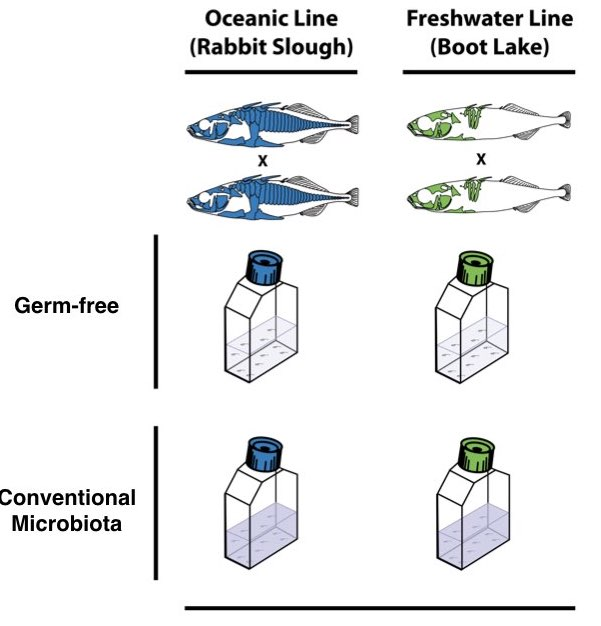

Tidy Data, Pipes, GREP and Large Files
2026-10-12
grep#! names the program that interprets the rest of the file (#!/usr/bin/env bash)rw-r--r--
x./hello.sh answers Permission deniedchmod +x hello.sh./hello.sh just runsbash hello.sh works without x, because there you are running bash, not the scriptls -l as a file-type flag + three rwx triplets (user, group, other): 755 = rwxr-xr-x, the classic script permissionshebang is not married to bashChange line 1 and the same mechanics run any language:
chmod +x once → ./script foreverLet’s work through our shell scripts
We will create a directory structure that we will use for the Python script on the next page
#!/usr/bin/env python3
# plot_stickleback.py - total RNA-seq counts per fish, by group
import pandas as pd # data tables (L05-L06)
import matplotlib.pyplot as plt # plotting (L06)
# One line to read the whole table - because it is tidy:
# a header of variable names, one row per fish, one value per cell
stickle = pd.read_csv("data/Stickle_RNAseq.tsv", sep="\t")
# One number per fish: total reads across the 600 gene columns
genes = [c for c in stickle.columns if c.startswith("Gene")]
totals = pd.DataFrame({"Group": stickle["Geno&Micro"],
"Total": stickle[genes].sum(axis=1)})
# A quick plot: one box per genotype-x-microbiota group
totals.boxplot(column="Total", by="Group")
plt.ylabel("Total reads per fish")
plt.savefig("results/total_counts_by_group.png", dpi=200)
print("Wrote results/total_counts_by_group.png")
Straight out of a lab notebook spreadsheet:
| Fish | Treatment | Length | Notes |
|---|---|---|---|
| AC1 | conv/A | 42 mm | healthy |
| AC2 | conv/A | 4.1cm | ? |
| AM1 | mono A | missing | died, replaced |
| BC1 | B - conventional | 44 |
Treatment packs two variables (genotype, microbiota) into one column - and codes them three different waysLength mixes numbers, units and text in one column - no tool can average 42 mm, 4.1cm and missing?, missing and blank - pick one convention (NA)| Individual | Genotype | Microbiota | Length_mm |
|---|---|---|---|
| AC1 | A | conventional | 42 |
| AC2 | A | conventional | 41 |
| AM1 | A | mono | NA |
| BC1 | B | conventional | 44 |
Individual Genotype Microbiota Geno&Micro Gene1 Gene2 Gene3 Gene4
AC1 A conventional convA 16 15 71 153Geno&Micro column duplicates two other columns
& is a name that will annoy every tool we use. Keep an eye on it.cat = concatenate and display files
less = view file page by page
space (forward), b (back), q (quit)/patternmore = similar to less but simpler
q to quithead = display first 10 lines (default)
head -n 20 file.txt shows first 20 linestail = display last 10 lines (default)
tail -n 20 file.txt shows last 20 linestail -f file.txt follows file as it grows (useful for logs)| = the pipe operator
command1 | command2 | command3cat file.txt | sort | uniqsort data.txt | head -5grep "pattern" file.txt | wc -lls -l | grep ".txt" | awk '{print $5, $9}'Note
grep gets its full treatment later todayawk, find and xargs are in L04cat data.csv | cut -d',' -f2 | sort | uniq -c | sort -rnfind . -name "*.txt" | xargs wc -l | sort -ntail -f logfile.txt | grep ERRORless for large files instead of cat> overwrites, >> appendsBasic syntax:
# Search for a simple pattern
grep "ACGT" sequences.txt
# Case-insensitive search
grep -i "gene" annotations.txt
# Count matching lines
grep -c ">" proteins.fasta
# Show line numbers
grep -n "ERROR" logfile.txt
# Invert match (show non-matching lines)
grep -v "^#" data.txt # Skip comment lines
# Search multiple files
grep "mutation" *.txtRegular expressions (regex) are patterns for matching text:
. = any single character* = zero or more of preceding character+ = one or more of preceding character? = zero or one of preceding character^ = start of line$ = end of line[abc] = any character in set[^abc] = any character NOT in set\ = escape special characters# Match DNA sequences
grep "^ATG" genes.txt # Lines starting with ATG
grep "TAG$" genes.txt # Lines ending with TAG
grep "A.G" sequences.txt # A, any char, then G
# Character classes
grep "[ACGT]" dna.txt # Any DNA base
grep "[^ACGT]" dna.txt # Non-DNA characters
grep "[0-9]" data.txt # Any digit
grep "[A-Za-z]" text.txt # Any letter
# Quantifiers
grep "A\{3\}" sequence.txt # Exactly 3 A's
grep "T\{2,4\}" sequence.txt # 2 to 4 T's
grep "GC*" sequence.txt # G followed by 0+ C'sThe file test.txt has four lines:
ATGCCCTAG
CCATG
ATG
ACGPredict the output of each command before you run it:
^ATG → lines 1 and 3 (must start with ATG)ATG$ → lines 2 and 3 (must end with ATG)^A.G$ → lines 3 and 4 (exactly three characters: A, anything, G)Use grep -E or egrep for extended regex:
# Alternation (OR)
grep -E "start|stop|pause" commands.txt
# Grouping
grep -E "(ATG|GTG|TTG)" codons.txt
# Plus quantifier (one or more)
grep -E "A+T+G+" sequences.txt
# Question mark (optional)
grep -E "colou?r" british_american.txt
# Complex patterns for bioinformatics
grep -E "^>sp\|[A-Z0-9]+\|" uniprot.fasta # UniProt headers
grep -E "[ACGT]{20,}" primers.txt # Sequences 20bp+# Count unique sequence headers
grep "^>" sequences.fasta | sort | uniq | wc -l
# Extract gene names from GFF file
grep -v "^#" annotation.gff | cut -f9 | grep -oE "gene=[^;]+"
# Find sequences without stop codons
grep -v -E "(TAA|TAG|TGA)" orfs.txt
# Quality control pipeline: count reads containing an N
# FASTQ records are 4 lines; the sequence is always line 2 of each,
# so awk 'NR % 4 == 2' pulls out sequence lines. (grep "^@" is NOT
# safe here - quality lines can start with @ too, since @ is a valid
# quality character.)
zcat reads.fastq.gz | awk 'NR % 4 == 2' | grep -c "N"
# Search and replace with sed (uses regex - sed is L04)
grep "gene" data.txt | sed 's/gene/GENE/g'streams and grep on the stickleback table# Keep only the header plus the mono-associated fish, save to a new file
head -n 1 data/Stickle_RNAseq.tsv > results/mono.tsv
grep -w "mono" data/Stickle_RNAseq.tsv >> results/mono.tsv
wc -l results/mono.tsv
# Which individuals are genotype B raised conventionally?
grep -w "convB" data/Stickle_RNAseq.tsv | cut -f 1
# A regular expression: IDs that are capital letters followed by the digit 1 (matches AC1 but not AC11)
grep -E "^[A-Z]+1\b" data/Stickle_RNAseq.tsv | cut -f 1-3
# Send errors somewhere useful: a typo in the path goes to the log, not the screen
grep -w "mono" data/Stickle_RNAseq.tsv 2> results/errors.log; cat results/errors.logTip
> creates the file, >> appends to it, 2> captures stderr.grep -w "mono" matches mono only as a whole word, so it finds the 40 mono-associated fish through the third column but would not match monoA on its own.grep -c mono versus grep -cw mono: both give 40 here.FASTA - sequences (genomes, genes, proteins)
>grep -c "^>" file.faTip
.fa.gz, .fastq.gz)zcat / zless / zgrep to read them without unpacking.Most genomic data is compressed to save space:
# View compressed files without extracting
zcat file.gz | head
zless file.gz
zgrep "pattern" file.gz
# Compress and decompress
gzip file.txt # Creates file.txt.gz
gunzip file.txt.gz # Restores file.txt
gzip -k file.txt # Keep original file
# Work directly with compressed files
# (count reads: every 4th line is a header; don't grep "^@" - quality lines can start with @)
zcat reads.fastq.gz | awk 'NR % 4 == 1' | wc -l
# Concatenate compressed files
zcat file1.gz file2.gz | gzip > combined.gzEverything so far - reading files, pipes, redirection, grep - in one realistic job: grab a big public dataset and ask it questions, straight from the shell
Genomic data files can be massive (the full human genome is ~1 GB compressed, ~3 GB as plain text)
FASTA format is standard for sequence data
Perfect use case for Unix pipes and redirection
We will practice on human chromosome 21 - the smallest autosome (~13 MB compressed, ~46 Mb of sequence), so every command finishes in seconds
The same commands work unchanged on the whole genome - only the wait time changes
The course book works through the same file in Chapter 9
Download chromosome 21 of the human genome (hg38 / GRCh38) from UCSC:
wget and curl are both tools for downloading files (macOS ships curl; install wget with Homebrew if you want it).gz extension means the file is compressedhg38.fa.gz (~1 GB) - same commands, much longer runsDon’t use cat on huge files! Use these approaches:
# Decompress and look at first 10 lines
gunzip -c chr21.fa.gz | head -10
# Check file size before and after decompression (-k keeps the .gz)
ls -lh chr21.fa.gz
gunzip -k chr21.fa.gz
ls -lh chr21.fa
# Count sequences in FASTA file (lines starting with >)
# grep can't read gzip data directly - use zgrep (or zcat | grep)
zgrep "^>" chr21.fa.gz | wc -l
# View sequence headers only
zgrep "^>" chr21.fa.gz | lessNote
acgt).GAATTC will miss sites inside masked regions - add -i to greptr 'acgt' 'ACGT'.Make a smaller working file for testing:
# Extract the first ~1 Mb of sequence for testing (50 bases per line)
zcat chr21.fa.gz | head -n 20000 > chr21_subset.fa
# Extract a specific record by name from a multi-sequence FASTA
# (e.g. from hg38.fa - chr21.fa has only one record)
awk '/^>chr21$/,/^>chr22$/' hg38.fa | head -n -1 > chr21_from_genome.fa
# Pull out a window of lines from the middle of the chromosome
sed -n '400000,420000p' chr21.fa > region_of_interest.faNote
awk and sed are the stars of L04 - read those two lines as recipes for now.
Extract specific regions or sequences:
grep -v inverts the match (excludes lines)tr -d '\n' removes newlinesfold -w1 puts each character on its own lineN - the first ~5 Mb of chr21 is unassembledSearch for specific sequences and motifs:
# Find all instances of a restriction enzyme site (EcoRI: GAATTC)
grep -v "^>" chr21.fa | \
tr 'acgt' 'ACGT' | \
tr -d '\n' | \
grep -o "GAATTC" | \
wc -l
# Extract 100 bases around each EcoRI site
grep -v "^>" chr21.fa | \
tr 'acgt' 'ACGT' | \
tr -d '\n' | \
grep -oE ".{100}GAATTC.{100}" > ecori_contexts.txt
# Find all start codons (ATG) and their byte offsets
grep -v "^>" chr21.fa | \
tr 'acgt' 'ACGT' | \
tr -d '\n' | \
grep -b -o "ATG" | \
head -20Stream processing without saving intermediate files:
# Download, decompress, and process in one pipeline
curl -sL https://hgdownload.soe.ucsc.edu/goldenPath/hg38/chromosomes/chr21.fa.gz | \
gunzip -c | \
grep -v "^>" | \
tr -d '\n' | \
cut -c1-1000000 > first_megabase.txt
# Download and immediately analyze GC content
wget -qO - https://hgdownload.soe.ucsc.edu/goldenPath/hg38/chromosomes/chr21.fa.gz | \
gunzip -c | \
grep -v "^>" | \
tr 'acgtn' 'ACGTN' | \
tr -d 'N\n' | \
tr 'ATGC' '0011' | \
awk '{n = length($0); gc = gsub(/1/, ""); print "GC%:", 100 * gc / n}'Using only today’s commands (grep -v, tr, fold, sort, uniq, wc):
chr21.faAT five or more units longN?Tip
Build each pipeline one command at a time and check the output at every stage. Remember the soft-masking: uppercase first with tr 'acgt' 'ACGT'.
BioE Computational Tools 2026 - Knight Campus